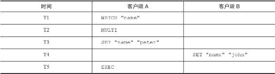
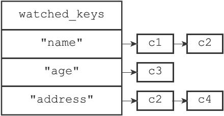
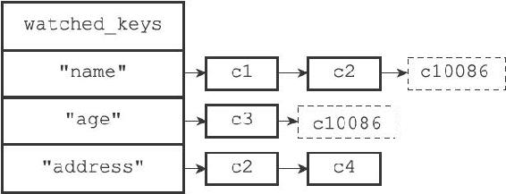
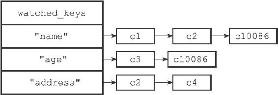
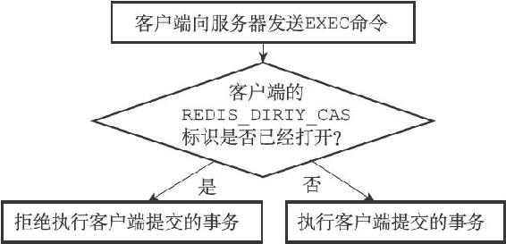
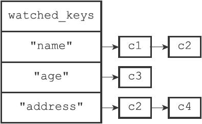
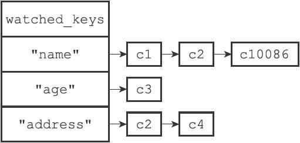

19.2 WATCH命令的实现
WATCH命令是一个乐观锁（optimistic locking），它可以在EXEC命令执行之前，监视任意数量的数据库键，并在EXEC命令执行时，检查被监视的键是否至少有一个已经被修改过了，如果是的话，服务器将拒绝执行事务，并向客户端返回代表事务执行失败的空回复。
以下是一个事务执行失败的例子：
redis> WATCH "name"
OK
redis> MULTI
OK
redis> SET "name" "peter"
QUEUED
redis> EXEC
(nil)
表19-1展示了上面的例子是如何失败的。
表19-1 两个客户端执行命令的过程

在时间T4，客户端B修改了"name"键的值，当客户端A在T5执行EXEC命令时，服务器会发现WATCH监视的键"name"已经被修改，因此服务器拒绝执行客户端A的事务，并向客户端A返回空回复。
本节接下来的内容将介绍WATCH命令的实现原理，说明事务系统是如何监视某个键，并在键被修改的情况下，确保事务的安全性的。
19.2.1 使用WATCH命令监视数据库键
每个Redis数据库都保存着一个watched_keys字典，这个字典的键是某个被WATCH命令监视的数据库键，而字典的值则是一个链表，链表中记录了所有监视相应数据库键的客户端：
typedef struct redisDb {
// ...
//
正在被WATCH
命令监视的键
dict *watched_keys;
// ...
} redisDb;
通过watched_keys字典，服务器可以清楚地知道哪些数据库键正在被监视，以及哪些客户端正在监视这些数据库键。
图19-3是一个watched_keys字典的示例，从这个watched_keys字典中可以看出：
·客户端c1和c2正在监视键"name"。
·客户端c3正在监视键"age"。
·客户端c2和c4正在监视键"address"。
通过执行WATCH命令，客户端可以在watched_keys字典中与被监视的键进行关联。举个例子，如果当前客户端为c10086，那么客户端执行以下WATCH命令之后：
redis> WATCH "name" "age"
OK
图19-3展示的watched_keys字典将被更新至图19-4所示的状态，其中用虚线包围的两个c10086节点就是由刚刚执行的WATCH命令添加到字典中的。

图19-3 一个watched_keys字典

图19-4 执行WATCH命令之后的watched_keys字典
19.2.2 监视机制的触发
所有对数据库进行修改的命令，比如SET、LPUSH、SADD、ZREM、DEL、FLUSHDB等等，在执行之后都会调用multi.c/touchWatchKey函数对watched_keys字典进行检查，查看是否有客户端正在监视刚刚被命令修改过的数据库键，如果有的话，那么touchWatchKey函数会将监视被修改键的客户端的REDIS_DIRTY_CAS标识打开，表示该客户端的事务安全性已经被破坏。
touchWatchKey函数的定义可以用以下伪代码来描述：
def touchWatchKey(db, key):
#
如果键key
存在于数据库的watched_keys
字典中
#
那么说明至少有一个客户端在监视这个key
if key in db.watched_keys:
#
遍历所有监视键key
的客户端
for client in db.watched_keys[key]:
#
打开标识
client.flags |= REDIS_DIRTY_CAS
举个例子，对于图19-5所示的watched_keys字典来说：
·如果键"name"被修改，那么c1、c2、c10086三个客户端的REDIS_DIRTY_CAS标识将被打开。
·如果键"age"被修改，那么c3和c10086两个客户端的REDIS_DIRTY_CAS标识将被打开。
·如果键"address"被修改，那么c2和c4两个客户端的REDIS_DIRTY_CAS标识将被打开。

图19-5 watched_keys字典
19.2.3 判断事务是否安全
当服务器接收到一个客户端发来的EXEC命令时，服务器会根据这个客户端是否打开了REDIS_DIRTY_CAS标识来决定是否执行事务：
·如果客户端的REDIS_DIRTY_CAS标识已经被打开，那么说明客户端所监视的键当中，至少有一个键已经被修改过了，在这种情况下，客户端提交的事务已经不再安全，所以服务器会拒绝执行客户端提交的事务。
·如果客户端的REDIS_DIRTY_CAS标识没有被打开，那么说明客户端监视的所有键都没有被修改过（或者客户端没有监视任何键），事务仍然是安全的，服务器将执行客户端提交的这个事务。
这个判断是否执行事务的过程可以用流程图19-6来描述。

图19-6 服务器判断是否执行事务的过程
举个例子，对于图19-5所示的watched_keys字典来说，如果某个客户端对"name"键进行了修改（比如执行SET"name""john"），那么c1、c2、c10086三个客户端的REDIS_DIRTY_CAS标识将被打开。当这三个客户端向服务器发送EXEC命令的时候，服务器会拒绝执行它们提交的事务，以此来保证事务的安全性。
19.2.4 一个完整的WATCH事务执行过程
为了进一步熟悉WATCH命令的运作方式，让我们来看一个带有WATCH的事务从开始到失败的整个过程。
假设当前客户端为c10086，而数据库watched_keys字典的当前状态如图19-7所示，那么当c10086执行以下WATCH命令之后：
c10086> WATCH "name"
OK
watched_keys字典将更新至图19-8所示的状态。

图19-7 执行WATCH命令之前的watched_keys字典

图19-8 执行WATCH命令之后的watched_keys字典
接下来，客户端c10086继续向服务器发送MULTI命令，并将一个SET命令放入事务队列：
c10086> MULTI
OK
c10086> SET "name" "peter"
QUEUED
就在这时，另一个客户端c999向服务器发送了一条SET命令，将"name"键的值设置成了"john"：
c999> SET "name" "john"
OK
c999执行的这个SET命令会导致正在监视"name"的所有客户端的REDIS_DIRTY_CAS标识被打开，其中包括客户端c10086。
之后，当c10086向服务器发送EXEC命令时候，因为c10086的REDIS_DIRTY_CAS标志已经被打开，所以服务器将拒绝执行它提交的事务：
c10086> EXEC
(nil)